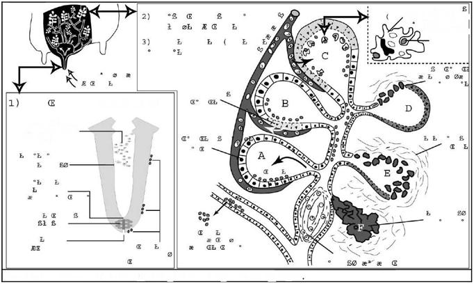
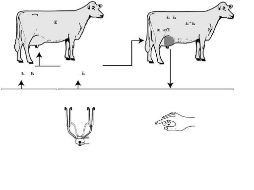

Данная статья посвящается, проблемам, связанным с элементарным предупреждением заболевания КРС воспалением молочной железы (маститом).
Мастит, или воспаление молочной железы, является наиболее распространенным заболеванием молочного скота во всем мире и наиболее дорого обходящимся фермеру. Хотя и стресс, и физические травмы могут вызывать воспаление железы, основной причиной мастита является инфицирование бактериями или другими микроорганизмами (различными грибками, вирусами).
При клиническом мастите зараженная четверть становится опухшей,болезненно реагирующей на прикосновение. Вид молока изменяется, в нем появляются сгустки, хлопья, бесцветная сыворотка и, иногда, кровь. В тяжелых случаях (острый мастит), у коровы появляются признаки общей реакции: жар, учащенный пульс, потеря аппетита и резкий спад молочной продуктивности.
При субклиническом (скрытом) мастите, напротив, признаки носят умеренный характер и труднее поддаются определению. Корова выглядит здоровой, на вымени не заметноникаких признаков воспаления, и молоко имеет нормальный вид. Однако микроорганизмы и белые кровяные тельца (соматические клетки), борющиеся с инфекцией, содержатся в молоке в повышенных концентрациях.
Потеря молока и прибыли из-за клинического мастита очевидна - продуктивность резко падает, и молоко от коров, подвергающихся лечению антибиотиками, должно выбрасываться в отходы в течении трех четрырех дней. Тем не менее, гораздо больше молока теряется из-за субклинического мастита, т.к.:
Контроль за субклиническим маститом более важен, чем просто лечение клинических случаев, поскольку:
Влияние мастита выходит вместе с молоком за ворота фермы. Изменения в составе молока (уменьшение содержания кальция, фосфора, белка и жира, и возрастание содержания натрия) ухудшают его качество. К тому же, антибиотики, используемые при лечении мастита, являются вредными для процесса переработки молока и для здоровья потребителей. Присутствие остатков антибиотиков в молоке, нарушает процесс производства многих молочных продуктов (сыра и других ферментированных продуктов). Нежелательный привкус снижает ценность молочных продуктов, и присутствие небольшого количества антибиотиков, может причинить ущерб здоровью потребителей.
Инфекция начинается, когда микроорганизмы проникают в сосковый канал и размножаются в молочной железе.
Сам сосок является первой линией обороны организма против бактерий в вымени. Обычно мышцы сфинктера плотно закрывают проток соска, когда корова не доится. Вторжение бактерий в сосок наиболее часто происходит во время дойки. Микроорганизмы, находящиеся в молоке или на поверхности соска, проталкиваются в сосок и полость соска, если существует нежелательное проникновение воздуха в доильный узел(соскальзывание или подсасывание воздуха аппаратом, снятие доильного стакана до того как будет отключен вакум). После дойки проток соска остается расширенным в течение одного-двух часов. Однако проток поврежденного соска может оставаться частично открытым постоянно. Микроорганизмы из окружающей среды (навоза, подстилки и т.д.) или поселившиеся в повреждениях кожи на конце соска, могут легко проникнуть в полностью или частично открытый проток.
Некоторые бактерии могут проникать в вымя, прикрепляясь к новым участкам ткани и размножаясь на них; другие виды передвигаются вместе с током молока, возникающим при движении коровы. В первую очередь бактерии поражают ткани, выстилающие крупные молочные протоки. Бактерии могут сталкиваться с лейкоцитами (белые кровяные тельца), обычно присутствующими в небольших количествах в молоке. Эти клетки формируют вторую линию защиты организма, поскольку они могут обволакивать и уничтожать бактерии. Однако в процессе уничтожения, лейкоциты выделяют вещества, стимулирующие передвижение дополнительных лейкоцитов из крови в молоко.
Если бактерии не полностью уничтожены, они продолжают размножаться, и начинают вторгаться в мелкие протоки и альвеолы. При повреждении токсинами и другими раздражителями, клетки, вырабатывающие молоко, выделяют вещества, вызывающие повышение проницаемости кровеносных сосудов. Дополнительные лейкоциты направляются к месту заражения. Они в больших количествах проникают в альвеолярную ткань, втискиваясь между поврежденными секреторными клетками. В пораженном участке также скапливаются жидкости, минералы и свертывающие вещества. Сгустки, образовавшиеся в молоке, могут закупорить протоки, тем самым изолировав пораженные участки.

Рис. 1 развитие мастита и защита коров от инфекции
Иногда организм быстро уничтожает микроорганизмы и освобождается от инфекции. В таком случае закупоренные протоки прочищаются, и состав молока и молочная продуктивность возвращаются к норме в течение нескольких дней. Однако, если инфекция развивается и протоки остаются закупоренными, скопившееся молоко инициирует возвращение секреторных клеток в бездейственное (непродуктивное) состояние, и альвеолы начинают сжиматься.. Вещества, выделяемые лейкоцитами, приводят к полному разрушению альвеолярной структуры, которая заменяется соединительной и рубцовой тканями. Разрушение ткани, секретирующей молоко, является по существу третьей линией защиты организма коровы, пытающегося победить инфекцию.
Таким образом, по мере развития заболевания происходит возрастание числа соматических клеток в молоке и связанное с этим (постоянное) снижение молочной продуктивности.

В процессе контроля за различными видами инфекции важно учитывать источники и пути распространения заболевания. Микроорганизмы, вызывающие мастит, обитают в различных средах (навоз, подстилка, кожа животного и т.д.). Общая ухоженность коров и чистота помещений, наряду с тщательным следованием процедурам содержания - особенно при дойке - являются эффективным средством контроля за распространением мастита.
Streptococcus agalactiae является наиболее распространенной причиной субклинического заражения, но редко вызывает серьезное заболевание (острый мастит). Этот микроорганизм обитает в вымени коровы, и может выжить вне молочной железы только в течение короткого промежутка времени. Он распространяется в основном во время доения через доильный аппарат, зараженные руки оператора и материалы (тряпки), используемые для обмывания вымени. Этот микроорганизм может заразить вымя молодой телки, если его сосала другая телка, которую до этого кормили зараженным молоком. Инфекция может существовать в вымени телки в течение неограниченного времени. Streptococcus agalactiae может быть уничтожен в стаде путем использования соответствующего лечения в сочетании с правильной практикой доения. Однако он может легко снова распространиться в стаде при покупке зараженного животного.
Staphylococcus aureus обитает на поверхности соска как внутри так и снаружи вымени, и является причиной большого числа случаев как клинического, так и субклинического мастита. Обычно он распространяется таким же путем, как и streptococcus agalactiae . Этот вид инфекции обычно вызывает образование рубцов, создающие в вымени изолированные очаги инфекции, которые трудно достигаются антибиотиками. Такиеочаги могут впоследствии прорываться и распространять инфекцию в другие участки вымени.
Эти микроорганизмы обитают в подстилке (особенно органической: соломе, опилках и т.д.), стоячей воде и почве. Их также можно обнаружить на коже половых органов коровы. Обычно они попадают из окружающей среды на соски коровы между дойками, но иногда это может происходить и во время доения. Эти микроорганизмы невозможно удалить из стада, поскольку они являются частью естественной окружающей среды. Частота заражения этими бактериями возрастает в условиях, способствующих их раэмножению - например, во влажное время года. Streptococcus uberis и streptococcus dysgalactiae также вызывают большинство случаев заболеваний маститом в начале и конце периода сухостоя. Вдобавок к двум упомянутым, существует также множество других видов внешних стрептококков (Strep, bovis, Strep fecalis), вызывающих мастит.
| Тип бактерии | Процент от общего числа инфекций | Основной источник | Основные пути распространения |
|---|---|---|---|
| Streptococcus agalactiae | > 40% | Зараженное вымя | От четверти к четверти и от коровы к корове во время дойки |
| Staphylococcus aureus | 30 - 40% | Зараженное вымя, поврежденный сосок | От четверти к четверти и от коровы к корове во время дойки |
| Внешние стрептококки | 5 - 10% | Подстилка, навоз | Окружающая среда коровы |
| Coliforms | < 1% | Навоз | Окружающая среда коровы |
Бактериии Coliform являются естественными обитателями почвы и кишечника коров. Они скапливаются и размножаются в навозе и подстилке. Бактерии Coliform могут вызвать мастит только если зараженные частицы соприкасаются с выменем. В противоположность описанным выше бактериям, бактериии Coliform не прикрепляются к протокам и альвеолам вымени, а быстро размножаются в молоке и выделяют токсины, попадающие в кровоток. В результате, заражение бактерией Coliform приводит к острому клиническому маститу. Температура тела коровы может превысить 40, а зараженная четверть опухает и становится чувствительной к прикосновению. Защитные механизмы организма могут уничтожить бактерии, попавшие в вымя; но токсины по-прежнему остаются в крови и корова может умереть. Коровы, не зараженные другими формами бактерий, вызывающих мастит (streptococcus agalactiae and staphylococcus aureus), по-видимому более подвержены заражению бактериями Coliform.
Теперь рассмотрим способы недопущения и предупреждения заболевания.
Одной из важнейших составляющих предупреждения, является соблюдение технологического процесса в производстве молока .
Самое важное - это правильное подключение к доильному оборудованию животных, перед подключением, в обязательном порядке, обработать обработкой до доения, а затем с каждой доли сдоить по 4-5 струек молока чтобы у коровы начала разгоняться гормональная система, начал вырабатываться окситоцин, затем наступает молокоотдача, весь процесс после сдаивания струек занимает 15-20 секунд . Только после всех проделанных манипуляций производим подключение, далее после того как вымя коровы выдоено, нужно произвести санитарную обработку вымени средством после доения.
Обычно, смысл этих санитарно- защитных средств после доения заключается в том, что бы после доения законсервировать сосок до следующего доения, для того чтобы туда не смогли попасть различные чужеродные патогенные микроорганизмы
Также это средство должно обладать смягчающим, ранозаживляющим, тонизирующим, главное бактерицидными, бактериостатическими свойствами.
Основной проблемой всех средств для обработки вымени после доения является то, что это химические смеси, к которым имеется привыкание
Ко всему прочему имеют место быть аллергические реакции. Так получается, что одно средство нужно заменять периодически другим , в основном все средства которые сегодня используются содержат в своих составах такие вещества как:
Все эти вещества обладают бактерицидными свойствами, но проблема заключается в том, что к ним имеется привыкание, не представляется возможным использовать эти вещества круглогодично с одинаковой эффективностью. И так в ходе испытаний было установлено, что фактор привыкания можно купировать если всю патогенную микрофлору превратить в питательную среду, для этого сегодня используются некоторые из штаммов бактерий рода Nitrosomonas eutropha так эти микроорганизмы питаются всеми вышеперечисленными патогенными микроорганизмами вызывающими мастит, и в ходе испытаний было установлено что привыкание к препарату, содержащему данный штамм бактерий отсутствует и приемлемо для круглогодичных пользований в условиях промышленности.
Плюсы такого рода средства в том, что количество эпизодов мастита возникших в процессе использования средств такого типа, сокращается на 43% а это серьезный показатель для молочной промышленности.
И в заключение, заболевание лучше предупредить и произвести профилактику, для того чтобы не терять молоко, тем самым увеличивая себестоимость молочной продукции.